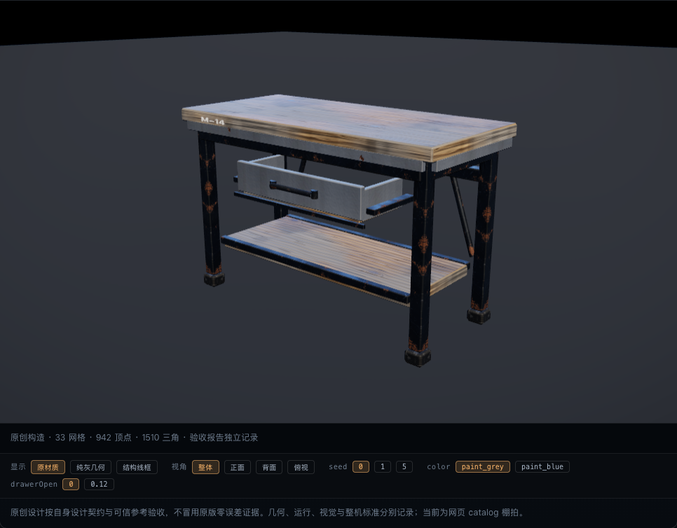
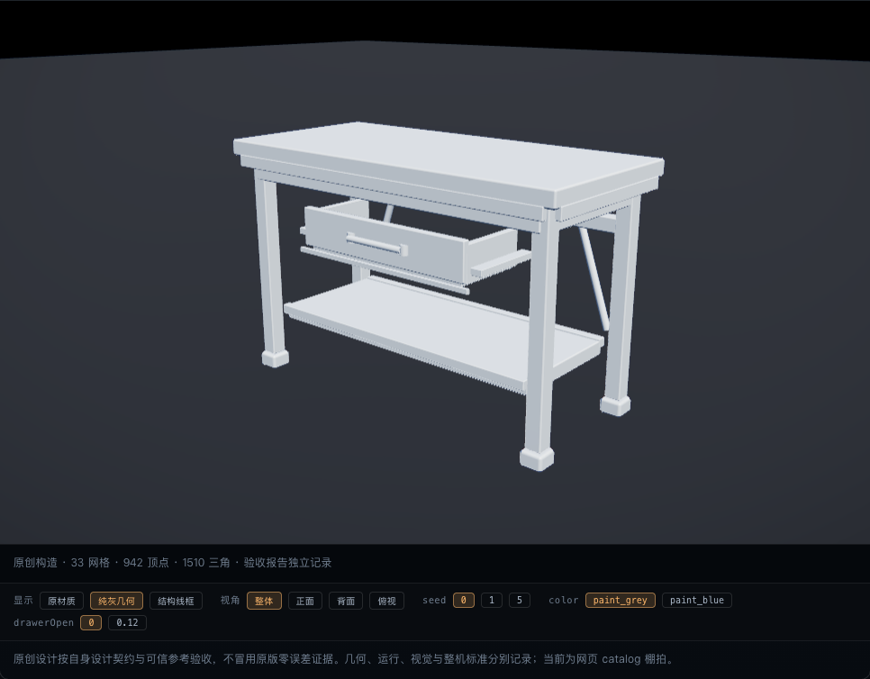

用同一套制作链，生产新的代码资产
已创建用户级技能 code-asset-authoring，并为网页增加原创资产独立注册、预览和验收入口。默认直接编写程序化几何，复用网页的米制建模工具、程序材质、贴花和棚拍宿主；不是让图片生成器生成一张“像模型”的图片。
以后直接这样提需求
使用 code-asset-authoring，在这个代码资产库制作一个 1.2×1.8×0.5m 双门维修柜。带真实内腔、两层层板、门轴、铰链、锁把、开合变体和材质标签。使用灰漆、深钢和少量锈蚀，底面中心为原点。按网页标准生成代码、入库、做灰模/线框/三视角检查，并交付通过项与未执行项。
宽 X × 高 Y × 深 Z；单位米、Y 向上、+Z 朝正面。还可补充参考图、近看距离、交互、变体和性能用途。缺少影响结构的关键信息会先确认，其余设计决策会写进契约，不会悄悄删减细节。
制作顺序
先定结构和质量
尺寸、轮廓、板厚、内腔、承重连接、门轴、功能件、材质尺度、碰撞、挂点、变体和预算。选已真实检查过的同类资产作质量对照。
代码构造＋独立入库
实现 build(ctx, options)，保留具名部件。原创源码、完整契约和注册表独立保存，不修改原版提取基线。
自动检查＋实际看图
检查几何、尺寸、部件、碰撞、确定性和所测变体，生成三角度、灰模与线框。再实际检查结构、UV、材质和装配，不能自动把截图生成当质量通过。
模型制作会调用哪些功能？
| 工作 | 调用能力 | 用途与限制 |
|---|---|---|
| 实体结构 | ctx.kit.metricBox / bevelBox / cylinder / tube / place | 生成板件、支架、管线、轴和把手，保持真实厚度、米制 UV 和尺度。不是一个总包围盒。 |
| 层级与合批 | THREE.Group / Mesh、kit.merge / Builder / batch | requiredParts 必须可查；动态部件 noMerge。核对 Builder 材质解析与 r=0 非米制 UV 路径。 |
| 程序表面 | ctx.mats.get(id, options) | 调用已登记程序材质与 GPU 烘焙。不得自行把缺贴图降成纯色；新增材质族需额外实现与验收。 |
| 标签与发光 | ctx.mats.label / decal / number / emissive | 真实 Canvas 标签、污迹、编号与发光。标签 UV 可明确用0–1，不用于代替实体门缝和五金。 |
| 变体与随机 | options、ctx.rng | 每次构造独立 seed，参数与合法值写入契约；不同姿态声明运动包络。 |
| 动态与重置 | root.userData.update / reset / dispose | 宿主驱动秒制时间；模型不自启 RAF。只清理独占资源，不能销毁共享材质。 |
| 碰撞与挂点 | userData.colliders / sockets | 逐盒八角核对；不以实心总盒堵住开口，活动件与挂点须按契约联动。 |
| 预览和证据 | 原创 NEW 分类、原材质 / 灰模 / 线框 / 视角 / 变体 | 用与网页相同的检查宿主；保留源码/契约hash、真实截图和报告。 |
文件与入口
~/.workbuddy/skills/code-asset-authoring/
SKILL.md
scripts/asset_author.py # doctor / scaffold / check / pack
scripts/verify_asset.cjs # 真实浏览器检查及截图
references/ # API、质量标准
assets/ # 脚手架、完整契约、原创学习样品
项目根目录/
assets/authored/registry.json # {schemaVersion:1, assets:[]}
assets/authored/<slug>.js # 唯一 build 导出
assets/authored/contracts/<slug>.json # 完整设计契约
tools/build_authored.py # 构建原创账本
assets/authored.js # 生成文件，不手改
可执行命令
SKILL_DIR="$HOME/.workbuddy/skills/code-asset-authoring" ROOT="/Users/zyq/WorkBuddy/2026-11-15-17-10-04" ID="new.harbor-repair-cabinet" python3 -B "$SKILL_DIR/scripts/asset_author.py" doctor --root "$ROOT" python3 -B "$SKILL_DIR/scripts/asset_author.py" scaffold --root "$ROOT" --id "$ID" \ --name "港区双门维修柜" --size "1.2,1.8,0.5" \ --materials "paint_grey,steel_dark" --parts "body,frame,door.left,door.right,handle" # 随后实现生成的源码，并填完完整设计契约；默认脚手架故意抛错。 python3 -B "$SKILL_DIR/scripts/asset_author.py" check --root "$ROOT" --id "$ID" python3 -B "$ROOT/tools/build_authored.py" --root "$ROOT" # 先确认 BASE_URL 属于此 root、Playwright 路径真实、证据父目录存在。 node "$SKILL_DIR/scripts/verify_asset.cjs" --root "$ROOT" --id "$ID" \ --base-url "http://127.0.0.1:8099/index.html" \ --playwright "/Users/zyq/work/wc/node_modules/playwright" \ --out-dir "$ROOT/outputs/repair-cabinet-evidence" python3 -B "$SKILL_DIR/scripts/asset_author.py" pack --root "$ROOT" --id "$ID" \ --evidence "$ROOT/outputs/repair-cabinet-evidence/report.json"
普通使用不需要手敲这些命令，直接提制作需求即可。命令公开便于复现。scaffold、check、pack 都不会自动签发 PASS；注册表保留 unverified，证据由独立报告绑定。
技能链路实测：原创维修工作台
样品仅在项目 build 下的隔离宿主验证，没有加入正式资产库。测得 33 网格、942 顶点、1510 三角、零退化面；尺寸约 1.4×0.9×0.65m。确定性、换色、静态抽屉姿态、碰撞和有限生命周期检查通过；三轮重新挂载无页面错误，共享材质未被 dispose。

